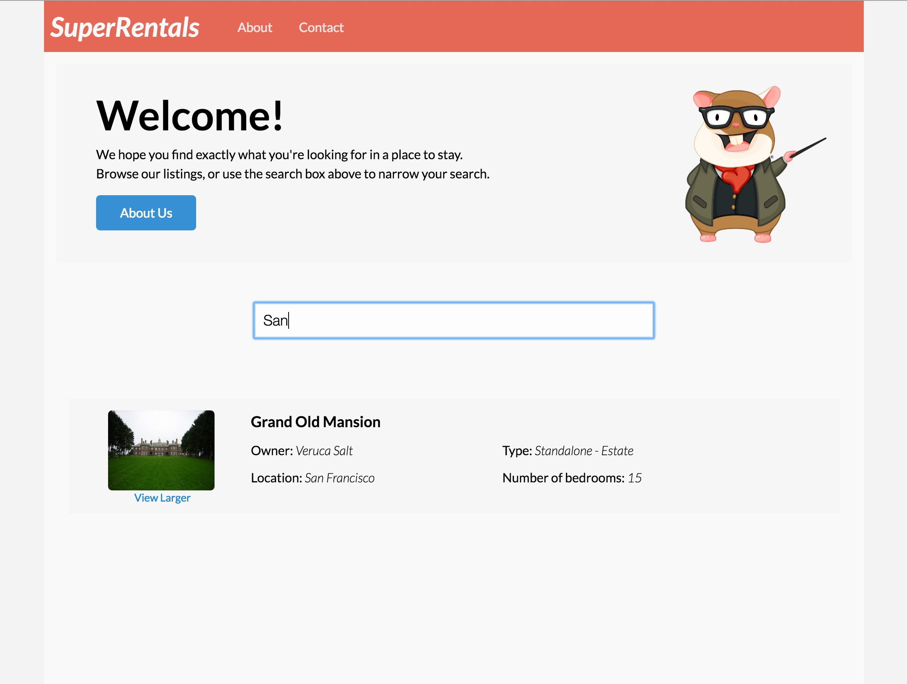
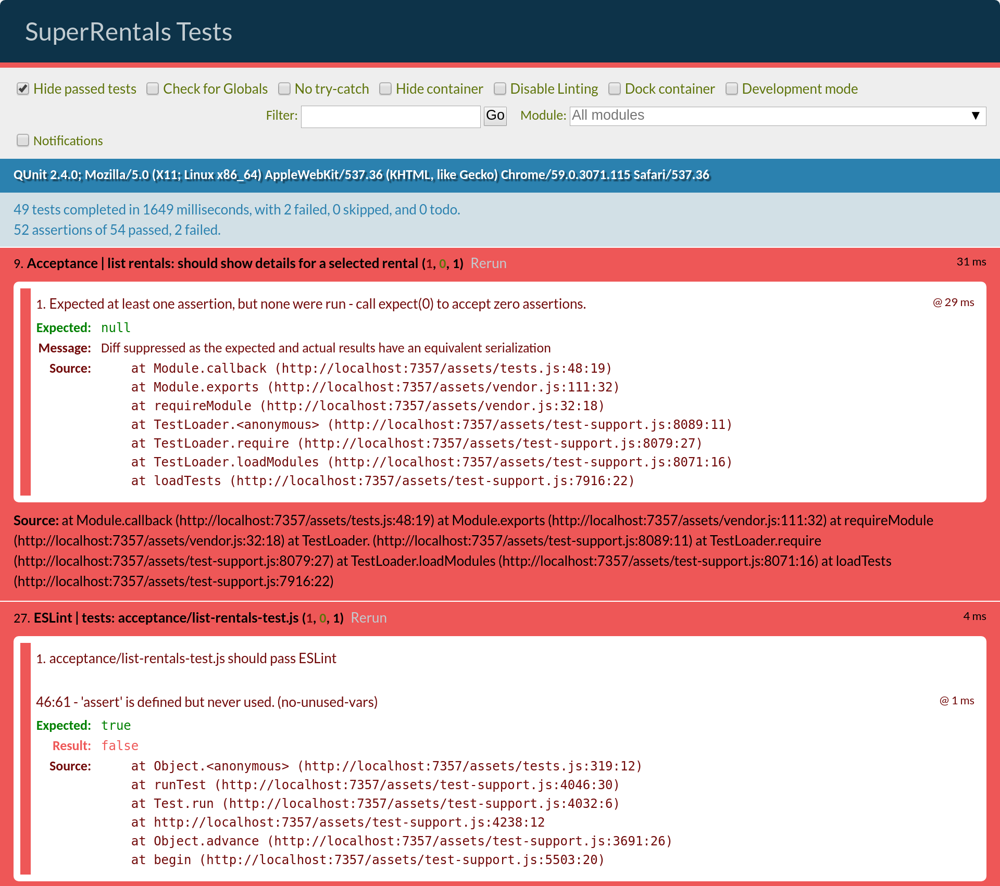

複雑なコンポーネントの作成 編集
ユーザが物件を検索する際に、検索対象を特定の都市に絞りたくなるかもしれません。 初めに作成した物件コンポーネントでは物件情報の表示のみでしたが、これから作成するfilterコンポーネントでは、検索対象を入力できるようにします。
それでは、コンポーネントを生成しましょう。 入力に基づいて物件一覧をフィルタするので、このコンポーネントをlist-filterと命名します。
1 |
ember g component list-filter |
rental-listingコンポーネントを作成する前と同様、以下のものが生成されます。
- Handlebarsテンプレート (
app/templates/components/list-filter.hbs), - JavaScriptファイル (
app/components/list-filter.js), - コンポーネントの統合テストファイル (
tests/integration/components/list-filter-test.js).
コンポーネントのマークアップ
app/templates/rentals.hbs テンプレートファイルに、作成したlist-filterコンポーネントの参照を追加します。
以下のコードでは、12行目と20行目のlist-filterの開きと閉じの中に物件を"ラップ"していることに注意してください。
これはコンポーネントのブロック形式の例であり、Handlebarsテンプレートをコンポーネントのテンプレート内の{{yield}}式があるところに描画します。
この場合、フィルタリングしたデータをブロック内のマークアップにrentalsという変数として渡しています（14行目）。
コンポーネントへの入力の受け付ける
コンポーネントには入力フィールドの表示とresultsをブロックに渡す(yield)だけなので、テンプレートは以下のように単純にしておきます。
テンプレートにはテキストフィールドとして描画される{{input}}ヘルパーが含まれています。このヘルパーに都市を絞る条件が入力できます。 inputのvalue属性は、コンポーネントのvalue属性と同期して保持されます。
または、inputのvalue属性がコンポーネントのvalue属性にバインド されているとも言えます。 ユーザーが入力フィールドを入力するか、プログラムで新しい値を割り当てるなどして値が変更されると、value属性の変更された値はレンダリングされたWebページとコードの両方に反映されます。
key-up属性は、handleFilterEntryアクションにバインドされます。
コンポーネントのJavaScriptは次のようになります。
| app/components/list-filter.js | |
1 2 3 4 5 6 7 8 9 10 11 12 13 14 15 16 17 18 19 20 |
import Component from '@ember/component'; export default Component.extend({ classNames: ['list-filter'], value: '', init() { this._super(...arguments); this.get('filter')('').then((results) => this.set('results', results)); }, actions: { handleFilterEntry() { let filterInputValue = this.get('value'); let filterAction = this.get('filter'); filterAction(filterInputValue).then((filterResults) => this.set('results', filterResults)); } } }); |
入力に基づくデータのフィルタリング
上記の例では、initアクションを使用して、filterアクションを文字を渡して実行して初期値を生成しています。 handleFilterEntryアクションは、inputヘルパーのvalue属性を対象にfilterという関数を実行しています。
filter関数は呼び出し元のオブジェクトによって渡されます。 これはクロージャーアクションと呼ばれるパターンです。
filter関数の実行結果に対して、then関数が呼び出されたことに注目してください。 このコードでは、filter関数がPromiseを返すことを期待しています。 Promiseは、非同期関数の結果を表すJavaScriptオブジェクトです。 Promiseは、Promiseを受け取った時点で実行される場合もあれば、実行されない場合もあります。 そのため、then関数のような、結果を受け取ったときに最終的に実行されるコードを渡せる関数があります。
都市別の物件のフィルタリングを実行するfilter関数を実装するため、rentalsコントローラを作成します。 [コントローラ]Controllersには、対応するルートのテンプレートで使用できるアクションとプロパティ(属性)が含まれています。 そのためこの場合は、rentalsというコントローラーを作成することになります。 Emberでは、rentalsという名前のコントローラーが同じ名前のルートに適用されます。
次のコマンドを実行して、rentalsルート用のコントローラを生成します。
1 |
ember g controller rentals |
次に、作成されたコントローラを以下のように変更してください。
| app/controllers/rentals.js | |
1 2 3 4 5 6 7 8 9 10 11 12 13 |
import Controller from '@ember/controller'; export default Controller.extend({ actions: { filterByCity(param) { if (param !== '') { return this.get('store').query('rental', { city: param }); } else { return this.get('store').findAll('rental'); } } } }); |
ユーザーがコンポーネントのテキストフィールドに入力すると、コントローラーのfilterByCityアクションが呼び出されます。 このアクションでは、valueプロパティが使用され、ユーザーが入力した内容と一致する物件データがデータストア内から抽出されます。 クエリの結果は呼び出し元に返されます。
検索結果の偽装
この動作を有効にするには、Mirageのconfig.jsファイルを次のように置き換えて、クエリに応答できるようにする必要があります。 単に全物件データを返す代わりに、Mirage HTTP GETハンドラのrentalsで、cityというURLクエリパラメータで指定された文字列と一致する物件を返すようにします。
| mirage/config.js | |
1 2 3 4 5 6 7 8 9 10 11 12 13 14 15 16 17 18 19 20 21 22 23 24 25 26 27 28 29 30 31 32 33 34 35 36 37 38 39 40 41 42 43 44 45 46 47 48 49 50 51 52 |
export default function() { this.namespace = '/api'; let rentals = [{ type: 'rentals', id: 'grand-old-mansion', attributes: { title: 'Grand Old Mansion', owner: 'Veruca Salt', city: 'San Francisco', "category": 'Estate', bedrooms: 15, image: 'https://upload.wikimedia.org/wikipedia/commons/c/cb/Crane_estate_(5).jpg', description: "This grand old mansion sits on over 100 acres of rolling hills and dense redwood forests." } }, { type: 'rentals', id: 'urban-living', attributes: { title: 'Urban Living', owner: 'Mike Teavee', city: 'Seattle', "category": 'Condo', bedrooms: 1, image: 'https://upload.wikimedia.org/wikipedia/commons/0/0e/Alfonso_13_Highrise_Tegucigalpa.jpg', description: "A commuters dream. This rental is within walking distance of 2 bus stops and the Metro." } }, { type: 'rentals', id: 'downtown-charm', attributes: { title: 'Downtown Charm', owner: 'Violet Beauregarde', city: 'Portland', "category": 'Apartment', bedrooms: 3, image: 'https://upload.wikimedia.org/wikipedia/commons/f/f7/Wheeldon_Apartment_Building_-_Portland_Oregon.jpg', description: "Convenience is at your doorstep with this charming downtown rental. Great restaurants and active night life are within a few feet." } }]; this.get('/rentals', function(db, request) { if(request.queryParams.city !== undefined) { let filteredRentals = rentals.filter(function(i) { return i.attributes.city.toLowerCase().indexOf(request.queryParams.city.toLowerCase()) !== -1; }); return { data: filteredRentals }; } else { return { data: rentals }; } }); } |
Mirageの設定を更新した後、ホーム画面でテキストフィールドに入力すると物件一覧が絞られるようになっています。

非同期処理と改善
テキストフィールドに素早く検索条件を入力すると、入力と同時に結果が反映されていないことに気がつくかもしれません。 これは、検索の機能が非同期であるためです。つまり、関数内のコードは後で実行されるようスケジュールされ、引き続きその関数を呼び出しているコードが実行されるためです。 多くの場合、ネットワークリクエストを行う可能性のあるコードは、サーバーの応答時間が様々なため、非同期処理されています。
結果が検索条件との同期が壊れないように、それを防ぐコードを追加しましょう。それにはまず、filter関数に検索条件を一緒に渡します。これにより、結果を取得した時に元の条件と現在の条件を比較できます。元の条件と現在の条件が同じ場合にのみ、画面上の結果を更新します。
| app/controllers/rentals.js | |
1 2 3 4 5 6 7 8 9 10 11 12 13 14 15 16 17 18 19 20 21 |
import Controller from '@ember/controller'; export default Controller.extend({ actions: { filterByCity(param) { if (param !== '') { return this.get('store').query('rental', { city: param }); return this.get('store') .query('rental', { city: param }).then((results) => { return { query: param, results: results }; }); } else { return this.get('store').findAll('rental'); return this.get('store') .findAll('rental').then((results) => { return { query: param, results: results }; }); } } } }); |
上のrentalsコントローラのfilterByCity関数では、以前と同様に物件の配列を返すのではなく、検索結果にqueryという新しいプロパティを追加しました。
| app/components/list-filter.js | |
1 2 3 4 5 6 7 8 9 10 11 12 13 14 15 16 17 18 19 20 21 22 23 24 25 26 27 |
import Component from '@ember/component'; export default Component.extend({ classNames: ['list-filter'], value: '', init() { this._super(...arguments); this.get('filter')('').then((allResults) => { this.set('results', allResults.results); }); }, actions: { handleFilterEntry() { let filterInputValue = this.get('value'); let filterAction = this.get('filter'); filterAction(filterInputValue).then((filterResults) => this.set('results', filterResults)); filterAction(filterInputValue).then((filterResults) => { if (filterResults.query === this.get('value')) { this.set('results', filterResults.results); } }); } } }); |
list-filterコンポーネントのJavaScriptでは、queryプロパティを使用してコンポーネントのvalueプロパティと比較します。
valueプロパティは、入力フィールドの最新の状態を表します。
したがって、結果が入力フィールドに一致することを確認することで、結果がユーザーが最後に入力したものと同期した状態を保つようになります。
この方法では、結果の順序を一致させることができますが、サーバーへの要求数を制限するなど、複数の並行タスクを処理する場合は、他に考慮すべき事項があります。 アプリケーションの効果的で堅牢な補完動作を作成するには、ember-concurrencyアドオンプロジェクトを検討することをお勧めします。
ここで、次の機能の実装に移るか、新しく作成したフィルタコンポーネントのテストの実装に進んでください。
統合テスト
一覧をフィルタリングするための新しいコンポーネントを作成したので、それを検証するためのテストを作成します。 rental-listingコンポーネントを以前にテストしたのと同様に、コンポーネントの動作を確認するためにコンポーネント統合テストを使用しましょう。
まず、list-filterコンポーネントを生成したときに作成されたコンポーネント統合テストtests/integration/components/list-filter-test.jsを開きます。 既存のテストを削除し、コンポーネントがデフォルトですべてのアイテムを一覧表示することを確認する新しいテストを作成します。
| tests/integration/components/list-filter-test.js | |
1 2 3 4 5 6 7 8 9 |
import { moduleForComponent, test } from 'ember-qunit'; import hbs from 'htmlbars-inline-precompile'; moduleForComponent('list-filter', 'Integration | Component | filter listing', { integration: true }); test('should initially load all listings', function (assert) { }); |
list-filterコンポーネントは関数を引数でとり、ユーザーが入力する文字列に基づいて一致する物件を検索に使います。テストのローカルスコープに設定するためにthis.onを使ってアクション関数をセットします。
| tests/integration/components/list-filter-test.js | |
1 2 3 4 5 6 7 8 9 10 11 12 13 14 15 16 17 18 |
import { moduleForComponent, test } from 'ember-qunit'; import hbs from 'htmlbars-inline-precompile'; import RSVP from 'rsvp'; const ITEMS = [{city: 'San Francisco'}, {city: 'Portland'}, {city: 'Seattle'}]; const FILTERED_ITEMS = [{city: 'San Francisco'}]; moduleForComponent('list-filter', 'Integration | Component | filter listing', { integration: true }); test('should initially load all listings', function (assert) { // we want our actions to return promises, //since they are potentially fetching data asynchronously this.on('filterByCity', () => { return RSVP.resolve({ results: ITEMS }); }); }); |
this.onは、渡された関数をfilterByCityとしてテストのローカルスコープに追加しています。コンポーネントに渡すのに使用できます。
上記のfilterByCity関数は、実際のコンポーネントのアクションに合わせ、物件検索しているかのように動作させています。
このテストでは、コンポーネントの機能のみに焦点を絞っているため、実際の物件のフィルタリングはテストしていません。 次のセクションで説明する受け入れテストでのフィルタリングの完全なロジックをテストします。
コンポーネントはフィルタプロセスが非同期であることを期待しているので、EmberのRSVPライブラリを使用してPromiseを返します。
次に、コンポーネントをレンダリングする呼び出しを追加して、上に示した都市を表示します。
| tests/integration/components/list-filter-test.js | |
1 2 3 4 5 6 7 8 9 10 11 12 13 14 15 16 17 18 19 20 21 22 23 24 25 26 27 28 29 30 31 32 33 34 |
import { moduleForComponent, test } from 'ember-qunit'; import hbs from 'htmlbars-inline-precompile'; import RSVP from 'rsvp'; const ITEMS = [{city: 'San Francisco'}, {city: 'Portland'}, {city: 'Seattle'}]; const FILTERED_ITEMS = [{city: 'San Francisco'}]; moduleForComponent('list-filter', 'Integration | Component | filter listing', { integration: true }); test('should initially load all listings', function (assert) { // we want our actions to return promises, //since they are potentially fetching data asynchronously this.on('filterByCity', () => { return RSVP.resolve({ results: ITEMS }); }); // with an integration test, // you can set up and use your component in the same way your application // will use it. this.render(hbs` {{#list-filter filter=(action 'filterByCity') as |results|}} <ul> {{#each results as |item|}} <li class="city"> {{item.city}} </li> {{/each}} </ul> {{/list-filter}} `); }); |
最後に、テストの最後にwaitを追加して結果をアサートします。
Emberのwaitヘルパーは、指定された関数コールバックを実行する前に、すべての非同期タスクが完了するのを待ちます。テストから復帰するPromiseを返します。
QUnitテストでPromiseを返すと、そのPromiseが解決されるまでテストは終了せず待機されます。 下記のコードでは、waitヘルパーの処理の終了の判断と、結果の状態をアサートする関数が完了すると、テストが完了します。
| tests/integration/components/list-filter-test.js | |
1 2 3 4 5 6 7 8 9 10 11 12 13 14 15 16 17 18 19 20 21 22 23 24 25 26 27 28 29 30 31 32 33 34 35 36 37 |
import { moduleForComponent, test } from 'ember-qunit'; import hbs from 'htmlbars-inline-precompile'; import wait from 'ember-test-helpers/wait'; import RSVP from 'rsvp'; const ITEMS = [{city: 'San Francisco'}, {city: 'Portland'}, {city: 'Seattle'}]; const FILTERED_ITEMS = [{city: 'San Francisco'}]; moduleForComponent('list-filter', 'Integration | Component | filter listing', { integration: true }); test('should initially load all listings', function (assert) { // we want our actions to return promises, since they are potentially fetching data asynchronously this.on('filterByCity', () => { return RSVP.resolve({ results: ITEMS }); }); // with an integration test, // you can set up and use your component in the same way your application will use it. this.render(hbs` {{#list-filter filter=(action 'filterByCity') as |results|}} <ul> {{#each results as |item|}} <li class="city"> {{item.city}} </li> {{/each}} </ul> {{/list-filter}} `); return wait().then(() => { assert.equal(this.$('.city').length, 3); assert.equal(this.$('.city').first().text().trim(), 'San Francisco'); }); }); |
2件目のテストでは、入力したテキストが実際にフィルタアクションを適切に呼び出し、表示されている一覧が更新されていることを確認します。
filterByCityアクションにいくつかの追加機能を追加して、値が設定されている時は物件を1件だけ含んだ
FILTERED_ITEMSを常に返すようにします。
入力フィールドでkeyUpイベントを生成してアクションを強制的に実行し、次に1つのアイテムだけがレンダリングされることをアサートします。
| tests/integration/components/list-filter-test.js | |
1 2 3 4 5 6 7 8 9 10 11 12 13 14 15 16 17 18 19 20 21 22 23 24 25 26 27 28 29 30 31 32 33 34 |
test('should update with matching listings', function (assert) { this.on('filterByCity', (val) => { if (val === '') { return RSVP.resolve({ query: val, results: ITEMS }); } else { return RSVP.resolve({ query: val, results: FILTERED_ITEMS }); } }); this.render(hbs` {{#list-filter filter=(action 'filterByCity') as |results|}} <ul> {{#each results as |item|}} <li class="city"> {{item.city}} </li> {{/each}} </ul> {{/list-filter}} `); // The keyup event here should invoke an action that will cause the list to be filtered this.$('.list-filter input').val('San').keyup(); return wait().then(() => { assert.equal(this.$('.city').length, 1); assert.equal(this.$('.city').text().trim(), 'San Francisco'); }); }); |
これで、２件の統合テストシナリオはパスするはずです。 確認するには、コマンドラインでember t -sとタイプしてテストスイートを起動します。
受け入れテスト
list-filterコンポーネントが期待どおりに動作することをテストしたので、ページ自体も受け入れテストで正しく動作することをテストしましょう。 物件一覧ページにアクセスしたユーザーが検索フィールドにテキストを入力し、都市別に物件一覧を絞り込むことができることを確認します。
既存の受け入れテスト、tests/acceptance/list-rentals-test.jsを開き、"should filter the list of rentals by city"(都市別に物件一覧をフィルタリングする)というラベルのテストを実装します。
| /tests/acceptance/list-rentals-test.js | |
1 2 3 4 5 6 7 8 9 |
test('should filter the list of rentals by city.', function (assert) { visit('/'); fillIn('.list-filter input', 'Seattle'); keyEvent('.list-filter input', 'keyup', 69); andThen(function() { assert.equal(find('.listing').length, 1, 'should show 1 listing'); assert.equal(find('.listing .location:contains("Seattle")').length, 1, 'should contain 1 listing with location Seattle'); }); }); |
このテストでは、fillInとkeyEventの2つの新しいヘルパーを使います。
fillInヘルパーは、指定されたテキストを指定されたセレクタに一致する入力フィールドに入力します。keyEventヘルパーは、キーストロークイベントをUIに送り、ユーザーのキー入力をシミュレートします。
app/components/list-filter.jsは、コンポーネント内のトップレベルの要素にlist-filterというクラスを持っています。 list-filterコンポーネントにはinput要素が1つしかないことがわかっているので、.list-filter inputをセレクタに使用してコンポーネント内の検索フィールドの場所を特定できます。
このテストでは、検索フィールドの検索条件として、Seattle」(シアトル)を入力し、ユーザー入力をシミュレートするためにコード69（eキー）を使用して同じフィールドにkeyupイベントを送信しています。
チュートリアルのコンポーネントの作成セクションでrental-listingコンポーネントのクラスにlistingを指定したので、それを要素を検索することで、検索結果の場所を特定しています。
データはMirageにハードコードしており、都市名が「Seattle(シアトル)」の物件は1件しかないことがわかっていますので、物件数は1件で、表示場所はSeattleであることをアサートしています。
入力欄にSeattleを入力すると、物件数が3から1に減少し、表示された項目にの場所がSeattleであることを検証しています。
これで失敗しているテストは2件に減っているはずです。実装されていない受け入れテストと未使用のassertで失敗しているESLintテストだけになりました。
